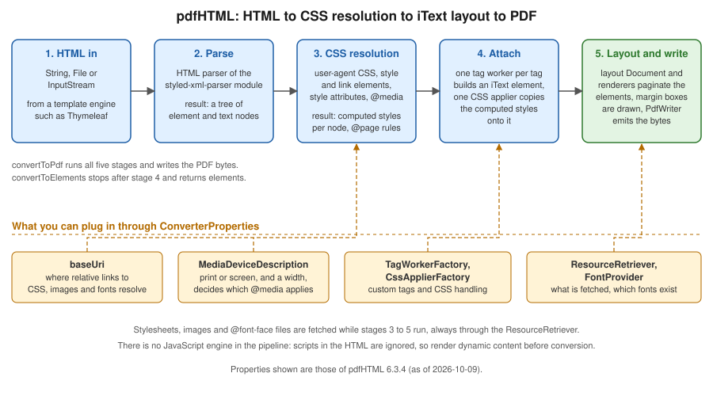

HTML to PDF with pdfHTML
|
This content was generated with the assistance of AI and should be verified against the official documentation before being relied on in production. |
Most business documents already exist as HTML somewhere: a web page, an email, a template that designers know how to
style. pdfHTML is the iText add-on that turns HTML and CSS into PDF without a browser: it parses the markup, resolves the
CSS, builds iText layout elements from the tags and lets the layout engine paginate them. This page covers pdfHTML 6.3.4
(com.itextpdf:html2pdf) with iText Core 9.8.0 on Java 21, as of 2026-10-09. Every example below was compiled and run
against those versions, and the generated files were inspected for page count, repeated table headers, page counters,
embedded fonts, tagging and the language entry. The running scenario is the Bookshelf Billing invoice: customer, invoice
lines in a table, totals, a header and a footer that repeat on every page.
pdfHTML is the choice when the layout is easier to say in HTML and CSS than in Java calls, when a designer owns the look, or when the same template must also be shown on screen. When the layout is rigid and programmatic, the layout elements of Layout Elements and Tables give finer control and a smaller dependency. The comparison with OpenHTMLtoPDF, headless Chromium and Gotenberg, including the licence consequences, is in Introduction & Approaches; the Spring Boot plumbing that returns bytes to a client is in Getting Started with Spring Boot.
What replaced HtmlWorker and XMLWorker
Books written for iText 1 and 2, among them the classic 2006 text iText in Action (consulted for the concept order of
this page, not reproduced), convert markup with HtmlWorker, the XmlParser class and its TagMap configuration file
(finding O8 of this section’s source analysis). iText 5 replaced that with the open-source XMLWorker library, which was a
separate artifact and parsed XHTML. None of them exists in iText 7, 8 or 9, and none of them supported CSS beyond a handful
of properties.
The current approach is pdfHTML and its entry point, com.itextpdf.html2pdf.HtmlConverter:
-
it accepts real-world HTML5 and CSS 3 rather than well-formed XHTML, and builds iText layout elements, so the result is the same
Documentand renderer model described in Document Lifecycle; -
the old
TagMapis replaced by tag workers and CSS appliers, two small interfaces that you can subclass (see the section on custom tags below); -
pages, headers and footers are expressed with the CSS paged-media module (
@pageand margin boxes) instead of page events, although the page-event approach of Page Events: Headers, Footers & Watermarks still works on the resultingPdfDocument; -
it is a separate Maven artifact with its own version line (6.x) and its own licence terms, which are AGPLv3 or a commercial licence, the same as iText Core. Code ported from the MPL and LGPL generations therefore changes licence category, as discussed in Introduction & Approaches.
The same book generation also shows examples for Java 1.3 to 5: no generics, string concatenation for markup, manual
close() calls in finally blocks (finding O28). The examples on this page use the Java 21 idioms that make HTML handling
pleasant: text blocks for literal markup, String.formatted, records for the data model, var, try-with-resources so
that the output stream and the PdfDocument are closed even on failure, pattern matching for instanceof and switch
expressions. The official sources for the converter are the
pdfHTML tutorial index of the iText Knowledge Base
and the pdfHTML product page.
Maven coordinates and licence
pdfHTML is on Maven Central. It depends on the iText Core modules it needs (forms, layout, svg, pdfa, pdfua,
styled-xml-parser and their transitive modules) at the matching 9.8.0 version, so you do not list them one by one. The
itext-core POM aggregator can be declared as well to pin the Core version explicitly. The
bouncy-castle-adapter that signing and encryption need (see the architecture page) is not required to convert HTML. pdfHTML
and iText Core are licensed under the AGPLv3 or under a commercial licence; the open-source terms oblige you to offer the
source of the whole application to its users, which is why many SaaS products buy the commercial licence.
<dependency>
<groupId>com.itextpdf</groupId>
<artifactId>html2pdf</artifactId>
<version>6.3.4</version>
</dependency>
<dependency>
<groupId>com.itextpdf</groupId>
<artifactId>itext-core</artifactId>
<version>9.8.0</version>
<type>pom</type>
</dependency>The version pairing of add-ons and Core is published in the
iText compatibility matrix; the module map is in
iText Architecture & Modules. The coordinates derive from
the installation guide. The .NET port is the NuGet package
itext.pdfhtml with the same version.
The conversion pipeline
A conversion runs in five stages, shown in the figure. The first two turn the input into a tree of nodes. The third resolves
CSS: it merges the user-agent stylesheet, the style and link elements, the style attributes and the @media blocks
that match the configured media device, so that every node ends up with a map of computed property values. The fourth walks
the tree: for each element a tag worker creates the iText element (a Paragraph, a Table, a Div, an Image) and a CSS applier
copies the computed values onto it as layout properties. The fifth hands the finished elements to a layout Document, whose
renderers paginate them; the margin boxes of the @page rules are drawn, and the PdfWriter writes the bytes.

Two consequences matter in practice. First, no JavaScript engine runs, so scripts are ignored and the template engine must
produce the final content before conversion. Second, every extension point is a property of ConverterProperties, which is
a plain value object that you can build once per application and reuse across conversions.
Hello HTML: the conversion entry points
HtmlConverter has static methods that take the HTML as a String, a File or an InputStream, and write the PDF to an
OutputStream, a File, a PdfWriter or an existing PdfDocument. The example shows the three shapes a service uses most:
a string to a file, a file to a file (relative URLs then resolve against the input folder) and a stream to a byte array that
a controller can return.
package com.example.billing;
import com.itextpdf.html2pdf.ConverterProperties;
import com.itextpdf.html2pdf.HtmlConverter;
import java.io.ByteArrayOutputStream;
import java.io.IOException;
import java.nio.file.Files;
import java.nio.file.Path;
public class HelloHtml {
private static final String HTML = """
<html lang="en">
<head><title>Invoice B-2026-0001</title></head>
<body>
<h1>Invoice B-2026-0001</h1>
<p>Bookshelf Billing, <b>hello</b> from pdfHTML.</p>
</body>
</html>
""";
public static void main(String[] args) throws IOException {
// 1. String in, OutputStream out
try (var out = Files.newOutputStream(Path.of("out/hello-string.pdf"))) {
HtmlConverter.convertToPdf(HTML, out);
}
// 2. File in, File out (the base URI is the folder of the input file)
Path html = Files.writeString(Path.of("out/hello.html"), HTML);
HtmlConverter.convertToPdf(html.toFile(), Path.of("out/hello-file.pdf").toFile());
// 3. InputStream in, byte[] out (what a REST controller returns)
var bytes = new ByteArrayOutputStream();
try (var in = Files.newInputStream(html)) {
HtmlConverter.convertToPdf(in, bytes, new ConverterProperties());
}
System.out.println("bytes: " + bytes.size());
}
}Without an @page rule the page is A4 (595 by 842 points) with a margin of 36 points, which the output of this example
confirms. The title element becomes the document title in the PDF metadata and lang becomes the document language, which
matters again in the accessibility section. The example derives from the
Hello HTML to PDF chapter and the
HtmlConverter API.
Three families of methods exist, and the choice decides how much control remains with you:
| Method | Returns or writes | Use it when |
|---|---|---|
|
Writes a complete PDF to an |
The whole document is the HTML. The common case. |
|
Writes into a |
You want to set the default page size, add event handlers, or write PDF/A or PDF/UA through your own document first. |
|
Returns an open layout |
You want to add more elements after the HTML, such as a final signature block, before closing it yourself. |
|
Returns a |
The HTML is a fragment to be mixed with elements built in Java. |
The PdfDocument variant lets you choose the page size before conversion: setting setDefaultPageSize(PageSize.A4.rotate())
before calling the converter gives landscape pages unless an @page rule overrides it.
CSS: where styles come from
pdfHTML reads styles from the same places as a browser: the built-in user-agent stylesheet, style elements, link elements with rel="stylesheet", and style attributes. Relative URLs, whether stylesheets, images or fonts,
resolve against the base URI, which you set with ConverterProperties.setBaseUri. When the HTML is given as a File the
base URI is the folder of the file; for a String or a stream there is no folder, so set it, typically to the template
folder on the classpath or on disk. Units follow the web conventions: 96 CSS pixels make an inch, while PDF measures in
points, 72 to the inch, so 16px is 12pt. The
defining styles with CSS chapter describes the mechanisms.
The media device description chooses which @media blocks apply. The default is not intuitive: in the test of this page
(pdfHTML 6.3.4), a conversion with no media description applied neither @media screen nor @media print rules, whereas
setting new MediaDeviceDescription(MediaType.PRINT) applied the print rules and MediaType.SCREEN the screen rules; a
width on the description also activated min-width queries. The tutorial describes the default as screen, so the safe rule is
to set the description explicitly, usually to print for documents that will be printed or archived, and to screen with a
width when you want the responsive layout of an existing web page.
The next example prints an 80-line invoice: an external stylesheet loaded through the base URI, the print media description,
and the standard outline handler, which turns h1 to h6 headings into PDF bookmarks. The stylesheet follows the example.
package com.example.billing;
import com.itextpdf.html2pdf.ConverterProperties;
import com.itextpdf.html2pdf.HtmlConverter;
import com.itextpdf.html2pdf.attach.impl.OutlineHandler;
import com.itextpdf.styledxmlparser.css.media.MediaDeviceDescription;
import com.itextpdf.styledxmlparser.css.media.MediaType;
import java.io.IOException;
import java.net.URL;
import java.nio.file.Files;
import java.nio.file.Path;
import java.util.stream.IntStream;
public class PrintInvoice {
public static void main(String[] args) throws IOException {
URL cssFolder = PrintInvoice.class.getResource("/pdf/");
var rows = new StringBuilder();
for (int i = 1; i <= 80; i++) {
rows.append("<tr><td>978-0-00-%05d-0</td><td>Book title %d</td><td class=\"num\">1</td><td class=\"num\">%d.90</td></tr>%n"
.formatted(i, i, i % 40));
}
String html = """
<html lang="en">
<head>
<title>Invoice B-2026-0001</title>
<link rel="stylesheet" href="invoice.css"/>
</head>
<body>
<h1>Invoice B-2026-0001</h1>
<table>
<thead><tr><th>ISBN</th><th>Title</th><th class="num">Qty</th><th class="num">Total</th></tr></thead>
<tbody>%s</tbody>
</table>
<h2>Terms</h2>
<p>Payment within 30 days.</p>
</body>
</html>
""".formatted(rows);
ConverterProperties props = new ConverterProperties()
.setBaseUri(cssFolder.toString())
.setMediaDeviceDescription(new MediaDeviceDescription(MediaType.PRINT))
.setOutlineHandler(OutlineHandler.createStandardHandler());
try (var out = Files.newOutputStream(Path.of("out/print-invoice.pdf"))) {
HtmlConverter.convertToPdf(html, out, props);
}
}
}@page {
size: A4;
margin: 25mm 18mm 22mm 18mm;
@top-left { content: "Bookshelf Billing"; font-size: 9pt; color: #555; }
@top-right { content: "Invoice B-2026-0001"; font-size: 9pt; color: #555; }
@bottom-center { content: "Page " counter(page) " of " counter(pages); font-size: 9pt; }
}
@page :first {
margin-top: 40mm;
@top-left { content: none; }
@top-right { content: none; }
}
body { font-family: Helvetica, sans-serif; font-size: 10pt; }
h1 { font-size: 20pt; }
h2 { page-break-before: always; }
table { width: 100%; border-collapse: collapse; }
thead { display: table-header-group; }
tr { page-break-inside: avoid; }
th, td { border-bottom: 0.5pt solid #999; padding: 3pt 4pt; text-align: left; }
td.num, th.num { text-align: right; }The output has four pages: the table header repeats on pages 2 and 3 because thead is declared as
table-header-group; no row is split between pages because of page-break-inside: avoid; the h2 starts the fourth page
because of page-break-before: always; and the margin boxes show the document name on every page but the first. The
tutorial that this derives from is the
media queries chapter.
Pages, margin boxes and page breaks
The CSS paged-media module is what makes HTML usable for documents. pdfHTML implements it as follows (as tested with 6.3.4, and consistent with the support list of the knowledge base):
-
@pagesets thesize(A4,letter,A4 landscape, or explicit lengths), the margins, borders and background of the page area. The pseudo-classes:first,:leftand:rightselect pages. The:blank,:rectoand:versopseudo-classes and named pages through thepageproperty are not supported. -
The sixteen margin boxes (
@top-left,@top-center,@top-right, the four corners, and the left, right and bottom boxes) hold generated content.content: "Page " counter(page) " of " counter(pages)produces page X of Y, with no event handler and no placeholder trick; the total is known because pdfHTML lays the document out before writing it. -
A running element moves a piece of the body into a margin box on every page: give the element
position: running(name)and reference it withcontent: element(name). This is the way to repeat a letterhead or a header table that is richer than a string. -
page-break-before,page-break-afterandpage-break-insidecontrol breaks. The newerbreak-before,break-afterandbreak-insideproperties are listed as unsupported, so use thepage-break-*spelling.orphansandwidowsare supported.
The example builds a 60-line statement with a running letterhead and page X of Y, and forces the annex onto a page of its own. The output has four pages with the letterhead on each of them.
package com.example.billing;
import com.itextpdf.html2pdf.HtmlConverter;
import java.io.IOException;
import java.nio.file.Files;
import java.nio.file.Path;
public class RunningHeader {
public static void main(String[] args) throws IOException {
StringBuilder paragraphs = new StringBuilder();
for (int i = 1; i <= 60; i++) {
paragraphs.append("<p>Line %d of the statement.</p>%n".formatted(i));
}
String html = """
<html lang="en">
<head>
<title>Statement</title>
<style>
@page {
size: A4;
margin: 30mm 20mm 20mm 20mm;
@top-center { content: element(letterhead); }
@bottom-right { content: "Page " counter(page) " of " counter(pages); }
}
#letterhead { position: running(letterhead); text-align: center; border-bottom: 1pt solid #1f5fa6; }
h2 { page-break-before: always; }
</style>
</head>
<body>
<div id="letterhead"><b>Bookshelf</b> Calle Ejemplo 1, Madrid</div>
<h1>Statement</h1>
%s
<h2>Annex</h2>
<p>Last page.</p>
</body>
</html>
""".formatted(paragraphs);
try (var out = Files.newOutputStream(Path.of("out/running.pdf"))) {
HtmlConverter.convertToPdf(html, out);
}
}
}The example derives from the
pdfHTML header and footer examples and the
CSS Paged Media Module Level 3 and
CSS Generated Content for Paged Media specifications, which define the margin boxes and
running(). Because the page counter makes the layout depend on the final page count, pdfHTML turns the immediate flush
property off when a counter is present; the memory implications are in the section on large documents.
Supported HTML and CSS
pdfHTML supports a large part of HTML5 and CSS 3, but it is a PDF layout engine, not a browser. The iText knowledge base keeps a living FAQ, What features are supported or unsupported in pdfHTML?, written against 6.3.3 and updated per release, and an online converter in the iText Demo Lab that always runs the newest release. Check the list before designing a template. The summary below combines that list with the behaviour observed in the examples of this page.
| Area | Status in pdfHTML 6.3.x |
|---|---|
Layout |
Block and inline flow, floats, positioning, tables, lists, multi-column, flexbox and grid (grid with limits for alignment
properties), |
Paged media |
|
Fonts |
|
Images and graphics |
|
Not supported |
JavaScript, |
Forms |
|
When an element cannot be handled pdfHTML does not stop: an unsupported tag is skipped or rendered as its content, and an
image that cannot be loaded is logged and left out, as the resource example below shows. Treat the log output at WARN and
ERROR level as part of the test suite of a template, and verify the result visually or with a golden file, as discussed on
the testing page of this section.
Fonts
If a document names no font family, text is serif and uses the standard Times-Roman font, which is not embedded; naming
Helvetica selects the standard Helvetica, also not embedded. Standard fonts are fine on screen and fatal for PDF/A and
PDF/UA, which require every font to be embedded, and they only cover Latin text. The general theory (standard fonts,
subsetting, IDENTITY_H, FontProvider) is in
Fonts & Unicode; this section is about wiring it into the
converter.
ConverterProperties.setFontProvider takes the same FontProvider as the layout module. pdfHTML adds DefaultFontProvider
in com.itextpdf.html2pdf.resolver.font, whose constructor takes three flags: register the standard PDF fonts, register the
twelve free fonts that ship with pdfHTML (a sans, a serif and a monospaced family in regular, bold, italic and bold italic,
per the tutorial),
and register the fonts of the operating system. Registering the system fonts makes output depend on the machine and is
discouraged on servers. A deterministic setup registers exactly the fonts you license and ship in the application, as the
example does with new DefaultFontProvider(false, false, false) and two font files registered under the alias used in the
CSS.
The example reads the fonts from a folder, converts a fragment to layout elements, mixes it with a Java-built Paragraph in
a Document, and then converts a full document into a landscape PdfDocument. The resulting file embeds subsets of
exactly the two registered faces, and the Ñ and é of the address render because the fonts were registered with
PdfEncodings.IDENTITY_H.
package com.example.billing;
import com.itextpdf.html2pdf.ConverterProperties;
import com.itextpdf.html2pdf.HtmlConverter;
import com.itextpdf.html2pdf.resolver.font.DefaultFontProvider;
import com.itextpdf.io.font.PdfEncodings;
import com.itextpdf.kernel.geom.PageSize;
import com.itextpdf.kernel.pdf.PdfDocument;
import com.itextpdf.kernel.pdf.PdfWriter;
import com.itextpdf.layout.Document;
import com.itextpdf.layout.element.IElement;
import com.itextpdf.layout.element.IBlockElement;
import com.itextpdf.layout.element.Image;
import com.itextpdf.layout.element.Paragraph;
import com.itextpdf.layout.font.FontProvider;
import com.itextpdf.layout.properties.TextAlignment;
import java.io.IOException;
import java.nio.file.Files;
import java.nio.file.Path;
import java.util.List;
public class ElementsAndFonts {
public static void main(String[] args) throws IOException {
// Fonts: no system fonts, no shipped fonts, only the ones we register.
// (fontPath is a folder with BookshelfSans-Regular.ttf and BookshelfSans-Bold.ttf)
String fontFolder = args.length > 0 ? args[0] : "src/main/resources/fonts";
FontProvider fonts = new DefaultFontProvider(false, false, false);
fonts.getFontSet().addFont(fontFolder + "/BookshelfSans-Regular.ttf", PdfEncodings.IDENTITY_H, "BookshelfSans");
fonts.getFontSet().addFont(fontFolder + "/BookshelfSans-Bold.ttf", PdfEncodings.IDENTITY_H, "BookshelfSans");
ConverterProperties props = new ConverterProperties().setFontProvider(fonts);
// HTML -> layout elements, mixed with programmatic content
String fragment = """
<div style="font-family: 'BookshelfSans'; font-size: 11pt">
<h2>Delivery address</h2>
<p>Calle Ejemplo 1, 28001 Madrid. <b>Ñandú café</b></p>
</div>
""";
List<IElement> elements = HtmlConverter.convertToElements(fragment, props);
try (var pdf = new PdfDocument(new PdfWriter(Files.newOutputStream(Path.of("out/elements.pdf"))));
var doc = new Document(pdf, PageSize.A4)) {
doc.setFontProvider(fonts);
doc.add(new Paragraph("Bookshelf Billing").setTextAlignment(TextAlignment.CENTER));
for (IElement element : elements) {
if (element instanceof IBlockElement block) {
doc.add(block);
} else if (element instanceof Image image) {
doc.add(image); // a top-level <img> is an ILeafElement, not a block
}
}
}
// Whole document into an existing PdfDocument (page size set by us, not by @page)
try (var pdf = new PdfDocument(new PdfWriter(Files.newOutputStream(Path.of("out/landscape.pdf"))))) {
pdf.setDefaultPageSize(PageSize.A4.rotate());
HtmlConverter.convertToPdf("<p style='font-family:BookshelfSans'>Landscape</p>", pdf, props);
}
}
}The same fonts can be declared in CSS with @font-face { font-family: 'BookshelfSans'; src: url('fonts/BookshelfSans-Regular.ttf'); },
which resolves through the base URI and the resource retriever. Using the provider keeps the font list out of the
templates, which is better when several templates share the fonts. Complex scripts (Arabic shaping, Indic scripts) need the
commercial pdfCalligraph add-on, as described on the fonts page. The fonts folder in the example is a placeholder for
the font files that your application ships. The example derives from the
using fonts in pdfHTML chapter.
Mixing HTML with Java: elements and stationery
convertToElements returns the layout elements for an HTML fragment instead of writing a PDF, which is how you embed a
styled block, such as a customer-supplied note, in a document otherwise built in Java. The elements are ordinary IElement
objects (usually Div, Paragraph and Table) that you add to a Document, as the example above does. Resources
referenced by the fragment resolve as usual through the base URI and the font provider.
The opposite pattern is stationery: an HTML body printed on a pre-designed letterhead page. pdfHTML supports background colours and images in @page rules, but a PDF letterhead page cannot be
referenced from CSS. Because convertToPdf can write into a PdfDocument you own, you can register a page event
handler first. The handler below extends AbstractPdfDocumentEventHandler, the iText 9 replacement for the page event
classes described on the page events page, and draws a form XObject copied from page one of a letterhead PDF on every new
page, behind the HTML content. The example creates a one-page letterhead itself so that it runs without external files.
package com.example.billing;
import com.itextpdf.html2pdf.ConverterProperties;
import com.itextpdf.html2pdf.HtmlConverter;
import com.itextpdf.kernel.colors.ColorConstants;
import com.itextpdf.kernel.pdf.PdfDocument;
import com.itextpdf.kernel.pdf.PdfReader;
import com.itextpdf.kernel.pdf.PdfWriter;
import com.itextpdf.kernel.pdf.canvas.PdfCanvas;
import com.itextpdf.kernel.pdf.event.AbstractPdfDocumentEvent;
import com.itextpdf.kernel.pdf.event.AbstractPdfDocumentEventHandler;
import com.itextpdf.kernel.pdf.event.PdfDocumentEvent;
import com.itextpdf.kernel.pdf.xobject.PdfFormXObject;
import java.io.IOException;
import java.nio.file.Files;
import java.nio.file.Path;
/** Letterhead PDF underneath pdfHTML output: the "company stationery" pattern. */
public class Stationery {
/** Stamps page 1 of a letterhead PDF under the content of every page. */
static class LetterheadHandler extends AbstractPdfDocumentEventHandler {
private final PdfFormXObject letterhead;
LetterheadHandler(PdfFormXObject letterhead) {
this.letterhead = letterhead;
addType(PdfDocumentEvent.START_PAGE); // before the page content, so the stationery is behind it
}
@Override
protected void onAcceptedEvent(AbstractPdfDocumentEvent event) {
var page = ((PdfDocumentEvent) event).getPage();
new PdfCanvas(page).addXObjectAt(letterhead, 0, 0);
}
}
public static void main(String[] args) throws IOException {
Path letterheadPdf = Path.of("out/letterhead.pdf");
makeLetterhead(letterheadPdf);
String html = """
<html lang="en"><head><title>Invoice</title>
<style>@page { margin: 40mm 20mm 20mm 20mm; }</style></head>
<body><h1>Invoice B-2026-0001</h1><p>Printed on the company letterhead.</p></body></html>
""";
try (var letterheadDoc = new PdfDocument(new PdfReader(letterheadPdf.toString()));
var pdf = new PdfDocument(new PdfWriter("out/stationery.pdf"))) {
PdfFormXObject letterhead = letterheadDoc.getFirstPage().copyAsFormXObject(pdf);
pdf.addEventHandler(PdfDocumentEvent.START_PAGE, new LetterheadHandler(letterhead));
HtmlConverter.convertToPdf(html, pdf, new ConverterProperties());
}
}
private static void makeLetterhead(Path target) throws IOException {
try (var pdf = new PdfDocument(new PdfWriter(Files.newOutputStream(target)))) {
var page = pdf.addNewPage();
new PdfCanvas(page).setFillColor(ColorConstants.BLUE).rectangle(0, 800, 595, 42).fill();
}
}
}The example derives from the
creating reports using pdfHTML chapter, which uses
the same stationery idea, and from the
AbstractPdfDocumentEventHandler API. The KB tutorial predates the iText 9 event classes, so the handler API
shown here is the compiled one.
Custom tag workers and CSS appliers
The mapping of tags to layout elements is open. A tag worker (ITagWorker) is created for each element by an
ITagWorkerFactory; it receives the text of the element and its child workers and exposes the resulting layout element. A
CSS applier (ICssApplier) copies the computed styles onto that element. Subclassing DefaultTagWorkerFactory and
DefaultCssApplierFactory and overriding getCustomTagWorker and getCustomCssApplier lets you add tags that do not exist in
HTML or change how an existing one is rendered; returning null falls through to the default mapping, so only your tags are
affected.
The example adds an isbn element. The tag worker prefixes the text with ISBN and returns a Text; the CSS applier then
makes it small, grey and letter-spaced. The four classes are listed together, followed by the call that registers them.
package com.example.billing;
import com.itextpdf.html2pdf.attach.ITagWorker;
import com.itextpdf.html2pdf.attach.ProcessorContext;
import com.itextpdf.layout.IPropertyContainer;
import com.itextpdf.layout.element.Text;
import com.itextpdf.styledxmlparser.node.IElementNode;
/** Turns {@code <isbn>978-...</isbn>} into a Text element that reads "ISBN 978-...". */
public class IsbnTagWorker implements ITagWorker {
private Text text = new Text("");
public IsbnTagWorker(IElementNode element, ProcessorContext context) {
// nothing to read from the element: its content arrives in processContent
}
@Override
public boolean processContent(String content, ProcessorContext context) {
text = new Text("ISBN " + content.strip());
return true;
}
@Override
public boolean processTagChild(ITagWorker childTagWorker, ProcessorContext context) {
return false; // <isbn> holds text only
}
@Override
public void processEnd(IElementNode element, ProcessorContext context) {
// nothing to finish
}
@Override
public IPropertyContainer getElementResult() {
return text;
}
}package com.example.billing;
import com.itextpdf.html2pdf.attach.ITagWorker;
import com.itextpdf.html2pdf.attach.ProcessorContext;
import com.itextpdf.html2pdf.css.apply.ICssApplier;
import com.itextpdf.kernel.colors.ColorConstants;
import com.itextpdf.layout.element.Text;
import com.itextpdf.styledxmlparser.node.IStylesContainer;
/** Applies the look of an ISBN: small, dark grey, wide letter spacing. */
public class IsbnCssApplier implements ICssApplier {
@Override
public void apply(ProcessorContext context, IStylesContainer stylesContainer, ITagWorker tagWorker) {
if (tagWorker.getElementResult() instanceof Text text) {
text.setFontSize(9).setFontColor(ColorConstants.DARK_GRAY).setCharacterSpacing(0.6f);
}
}
}package com.example.billing;
import com.itextpdf.html2pdf.attach.ITagWorker;
import com.itextpdf.html2pdf.attach.ProcessorContext;
import com.itextpdf.html2pdf.attach.impl.DefaultTagWorkerFactory;
import com.itextpdf.styledxmlparser.node.IElementNode;
public class BookshelfTagWorkerFactory extends DefaultTagWorkerFactory {
@Override
public ITagWorker getCustomTagWorker(IElementNode tag, ProcessorContext context) {
if ("isbn".equals(tag.name())) {
return new IsbnTagWorker(tag, context);
}
return null; // everything else: the default mapping
}
}package com.example.billing;
import com.itextpdf.html2pdf.css.apply.ICssApplier;
import com.itextpdf.html2pdf.css.apply.impl.DefaultCssApplierFactory;
import com.itextpdf.styledxmlparser.node.IElementNode;
public class BookshelfCssApplierFactory extends DefaultCssApplierFactory {
@Override
public ICssApplier getCustomCssApplier(IElementNode tag) {
if ("isbn".equals(tag.name())) {
return new IsbnCssApplier();
}
return null;
}
}package com.example.billing;
import com.itextpdf.html2pdf.ConverterProperties;
import com.itextpdf.html2pdf.HtmlConverter;
import java.io.IOException;
import java.nio.file.Files;
import java.nio.file.Path;
public class CustomTags {
public static void main(String[] args) throws IOException {
String html = "<html><body><p>Shipped: <isbn>978-0-00-00001-0</isbn>, thank you.</p></body></html>";
ConverterProperties props = new ConverterProperties()
.setTagWorkerFactory(new BookshelfTagWorkerFactory())
.setCssApplierFactory(new BookshelfCssApplierFactory());
try (var out = Files.newOutputStream(Path.of("out/custom-tags.pdf"))) {
HtmlConverter.convertToPdf(html, out, props);
}
}
}In the generated content stream the second text run is drawn at 9 points with grey fill and 0.6 points of character
spacing, so both extension points ran. The pattern derives from the
custom tag workers and CSS appliers chapter and
the API pages for
ITagWorker and
ICssApplier. The tag
worker and applier interfaces changed between pdfHTML 4, 5 and 6, so copy the shape from the compiled example rather than
from older blog posts. A custom worker is also the way to attach an AcroForm field or a barcode to a tag, which the forms
and barcodes pages of this section build on.
Resource retrievers: images, stylesheets and untrusted HTML
Every external resource that the HTML mentions, such as stylesheets, images, fonts and SVG, goes through an
IResourceRetriever. The default, DefaultResourceRetriever, opens the URL: that includes http, https and file
URLs. If the HTML can come from a user, an administrator form or a database template, the retriever is a security
boundary: a hostile img src can make your server request internal URLs (server-side request forgery), point at file: URLs, or
hang on a slow host, and an endless stream can exhaust memory.
DefaultResourceRetriever is designed for hardening: setResourceSizeByteLimit caps the size, setConnectTimeout and
setReadTimeout bound the time, and the protected urlFilter(URL) method, overridden in a subclass, decides which URLs may
be fetched. The example allows only https URLs of one host and file URLs inside the template folder. The first image, on
a host that is not in the list, and the second, a local file outside the folder, are both refused and logged, and the
conversion carries on with the remaining content.
package com.example.billing;
import com.itextpdf.html2pdf.ConverterProperties;
import com.itextpdf.html2pdf.HtmlConverter;
import com.itextpdf.styledxmlparser.resolver.resource.DefaultResourceRetriever;
import java.io.IOException;
import java.net.URL;
import java.nio.file.Files;
import java.nio.file.Path;
import java.util.Set;
public class LockedDownResources {
/** Fetches only from a fixed allow-list of hosts and never from file: URLs outside the template folder. */
static class AllowListRetriever extends DefaultResourceRetriever {
private final Set<String> hosts;
private final String templateFolder;
AllowListRetriever(Set<String> hosts, String templateFolder) {
this.hosts = hosts;
this.templateFolder = templateFolder;
setResourceSizeByteLimit(2_000_000);
setConnectTimeout(3_000);
setReadTimeout(5_000);
}
@Override
protected boolean urlFilter(URL url) {
boolean allowed = switch (url.getProtocol()) {
case "https" -> hosts.contains(url.getHost());
case "file" -> url.getPath().startsWith(templateFolder);
default -> false;
};
if (!allowed) {
System.out.println("blocked: " + url);
}
return allowed;
}
}
public static void main(String[] args) throws IOException {
String folder = Path.of("src/main/resources/pdf").toAbsolutePath().toString();
String html = """
<html><body>
<img src="https://tracker.example.test/pixel.png"/>
<img src="file:///etc/hosts"/>
<p>Body text</p>
</body></html>
""";
ConverterProperties props = new ConverterProperties()
.setResourceRetriever(new AllowListRetriever(Set.of("static.bookshelf.example.test"), folder));
try (var out = Files.newOutputStream(Path.of("out/locked.pdf"))) {
HtmlConverter.convertToPdf(html, out, props);
}
}
}The default retriever, the size limit and the filtering idea are described in pdfHTML: Custom ResourceRetriever. Defence in depth is still needed: do not let users supply markup at all when they only need to supply values, escape every value inserted into a template (see the Thymeleaf section below), and run conversions of untrusted content in a process with no network access to internal services.
HTML to PDF/UA and PDF/A
pdfHTML can write conforming files directly from ConverterProperties. Both standards need embedded fonts, so register a
font provider with real font files, as above. For accessibility, setPdfUAConformance(PdfUAConformance.PDF_UA_1) (or
PDF_UA_2) makes the converter write a tagged document in which the converter tags the content, so that headings, tables, captions, table header cells and
images with alt text appear in the structure tree; the document language comes from the lang attribute of the html element and
the title from the title element, and both are required by PDF/UA. For archiving, setPdfAConformance(PdfAConformance.PDF_A_3B)
needs a colour output intent, which setDocumentOutputIntent supplies (the example builds one from the sRGB profile that
ships with the JDK; use your own licensed profile in production), and forbids anything that is not embedded.
package com.example.billing;
import com.itextpdf.html2pdf.ConverterProperties;
import com.itextpdf.html2pdf.HtmlConverter;
import com.itextpdf.html2pdf.resolver.font.DefaultFontProvider;
import com.itextpdf.io.font.PdfEncodings;
import com.itextpdf.kernel.pdf.PdfAConformance;
import com.itextpdf.kernel.pdf.PdfOutputIntent;
import com.itextpdf.kernel.pdf.PdfUAConformance;
import com.itextpdf.layout.font.FontProvider;
import java.awt.color.ColorSpace;
import java.awt.color.ICC_Profile;
import java.io.ByteArrayInputStream;
import java.io.IOException;
import java.nio.file.Files;
import java.nio.file.Path;
public class AccessibleInvoice {
static final String HTML = """
<!DOCTYPE html>
<html lang="en">
<head>
<meta charset="utf-8"/>
<title>Invoice B-2026-0001</title>
<style>body { font-family: 'BookshelfSans'; }</style>
</head>
<body>
<h1>Invoice B-2026-0001</h1>
<img src="logo.svg" alt="Bookshelf logo" width="80"/>
<table>
<caption>Invoice lines</caption>
<thead><tr><th scope="col">Title</th><th scope="col">Total</th></tr></thead>
<tbody><tr><td>Refactoring</td><td>79.80</td></tr></tbody>
</table>
</body>
</html>
""";
static FontProvider fonts(String folder) {
FontProvider fonts = new DefaultFontProvider(false, false, false);
fonts.getFontSet().addFont(folder + "/BookshelfSans-Regular.ttf", PdfEncodings.IDENTITY_H, "BookshelfSans");
fonts.getFontSet().addFont(folder + "/BookshelfSans-Bold.ttf", PdfEncodings.IDENTITY_H, "BookshelfSans");
return fonts;
}
public static void main(String[] args) throws IOException {
String folder = "src/main/resources/fonts";
String base = Path.of("src/main/resources/pdf").toUri().toString();
// PDF/UA-1: tagged structure, language and title come from the HTML
ConverterProperties ua = new ConverterProperties()
.setBaseUri(base)
.setFontProvider(fonts(folder))
.setPdfUAConformance(PdfUAConformance.PDF_UA_1);
try (var out = Files.newOutputStream(Path.of("out/invoice-ua.pdf"))) {
HtmlConverter.convertToPdf(HTML, out, ua);
}
// PDF/A-3b: needs an output intent and only embedded fonts
byte[] icc = ICC_Profile.getInstance(ColorSpace.CS_sRGB).getData();
var intent = new PdfOutputIntent("Custom", "", "http://www.color.org", "sRGB IEC61966-2.1",
new ByteArrayInputStream(icc));
ConverterProperties pdfa = new ConverterProperties()
.setBaseUri(base)
.setFontProvider(fonts(folder))
.setPdfAConformance(PdfAConformance.PDF_A_3B)
.setDocumentOutputIntent(intent);
try (var out = Files.newOutputStream(Path.of("out/invoice-a3b.pdf"))) {
HtmlConverter.convertToPdf(HTML, out, pdfa);
}
}
}The UA file reports tagged with the language en and the title of the page, and both files embed subsets of the two
registered BookshelfSans faces. The tag structure, the checks that a validator such as veraPDF performs and the meaning of
the conformance levels are covered in
PDF Standards & Conformance, and the iText-specific classes
on the PDF/A and PDF/UA page of this section. A tagged file is only
as accessible as its markup: use th scope, caption,
heading levels without gaps and meaningful alt text, as recommended in the
PDF/UA tutorial. The conformance options derive from the
ConverterProperties API.
A Thymeleaf template rendered to PDF
A template engine produces the HTML, pdfHTML produces the PDF. The recipe is the "From email to PDF" hand-off described in
Emails & Text Templates: keep a dedicated engine and template folder for
documents (see Standalone Engine & Configuration for the
engine and resolver) so that the web view resolver never sees it, render with process, and hand the string to
HtmlConverter together with a base URI that points at the template folder.
The template is a natural Thymeleaf template (valid HTML with th: attributes) that links the stylesheet used earlier.
Record accessors are called as methods, line.total(), which works in the standalone OGNL dialect used here and in SpEL under
Spring, as long as the record and its accessors are public.
<!DOCTYPE html>
<html lang="en" xmlns:th="http://www.thymeleaf.org">
<head>
<meta charset="utf-8"/>
<title th:text="'Invoice ' + ${invoice.number()}">Invoice</title>
<link rel="stylesheet" th:href="@{invoice.css}" href="invoice.css"/>
</head>
<body>
<h1 th:text="'Invoice ' + ${invoice.number()}">Invoice B-0000</h1>
<p th:text="${invoice.customer()}">Customer</p>
<table>
<thead>
<tr><th>ISBN</th><th>Title</th><th class="num">Qty</th><th class="num">Total</th></tr>
</thead>
<tbody>
<tr th:each="line : ${invoice.lines()}">
<td th:text="${line.isbn()}">978-0-00-00000-0</td>
<td th:text="${line.title()}">Title</td>
<td class="num" th:text="${line.quantity()}">1</td>
<td class="num" th:text="${#numbers.formatDecimal(line.total(), 1, 2)}">0.00</td>
</tr>
</tbody>
</table>
</body>
</html>package com.example.billing;
import com.itextpdf.html2pdf.ConverterProperties;
import com.itextpdf.html2pdf.HtmlConverter;
import org.thymeleaf.TemplateEngine;
import org.thymeleaf.context.Context;
import org.thymeleaf.templatemode.TemplateMode;
import org.thymeleaf.templateresolver.ClassLoaderTemplateResolver;
import java.io.ByteArrayOutputStream;
import java.io.IOException;
import java.math.BigDecimal;
import java.net.URL;
import java.nio.charset.StandardCharsets;
import java.nio.file.Files;
import java.nio.file.Path;
import java.util.List;
import java.util.Locale;
public class ThymeleafInvoicePdf {
public record Line(String isbn, String title, int quantity, BigDecimal unitPrice) {
public BigDecimal total() {
return unitPrice.multiply(BigDecimal.valueOf(quantity));
}
}
public record Invoice(String number, String customer, List<Line> lines) {
}
private final TemplateEngine engine;
private final URL templateFolder = ThymeleafInvoicePdf.class.getResource("/templates/pdf/");
ThymeleafInvoicePdf() {
var resolver = new ClassLoaderTemplateResolver();
resolver.setPrefix("templates/pdf/");
resolver.setSuffix(".html");
resolver.setTemplateMode(TemplateMode.HTML);
resolver.setCharacterEncoding(StandardCharsets.UTF_8.name());
resolver.setCacheable(true);
engine = new TemplateEngine(); // a dedicated engine, separate from the web view engine
engine.setTemplateResolver(resolver);
}
byte[] render(Invoice invoice) throws IOException {
var context = new Context(Locale.ENGLISH);
context.setVariable("invoice", invoice);
String html = engine.process("invoice", context);
var out = new ByteArrayOutputStream();
// the base URI lets <link href="invoice.css"> and images resolve next to the template
HtmlConverter.convertToPdf(html, out, new ConverterProperties().setBaseUri(templateFolder.toString()));
return out.toByteArray();
}
public static void main(String[] args) throws IOException {
var invoice = new Invoice("B-2026-0001", "Example Customer",
List.of(new Line("978-0-00-00001-0", "Refactoring", 2, new BigDecimal("39.90")),
new Line("978-0-00-00002-0", "Domain-Driven Design", 1, new BigDecimal("49.50"))));
byte[] pdf = new ThymeleafInvoicePdf().render(invoice);
Files.write(Path.of("out/thymeleaf-invoice.pdf"), pdf);
System.out.println("bytes: " + pdf.length);
}
}The output keeps the table header and the page X of Y footer from the stylesheet, and the title and language from the
template. Two cautions apply. Thymeleaf escapes th:text values, which is what keeps customer-supplied names from injecting
markup; never switch to th:utext for data you do not control, and see
Template Security & XSS. And a template stored in a database or edited
by users is a template-injection risk of its own, as the Thymeleaf pages explain.
In Spring Boot 4 the same code becomes a service and a controller. The service owns a dedicated SpringTemplateEngine, a
ClassLoaderTemplateResolver that serves templates/pdf/ and the conversion; the controller returns the bytes with a
Content-Disposition header, as in the controller section of
Getting Started with Spring Boot. The Maven
dependencies are spring-boot-starter-webmvc, spring-boot-starter-thymeleaf and com.itextpdf:html2pdf:6.3.4. The
application was run, and GET /invoices/B-2026-0001.pdf answered 200 with application/pdf, the inline disposition
and a PDF 1.7 body.
package com.example.billing;
import java.math.BigDecimal;
import java.util.List;
public record Invoice(String number, String customer, List<Line> lines) {
public record Line(String isbn, String title, int quantity, BigDecimal unitPrice) {
public BigDecimal total() {
return unitPrice.multiply(BigDecimal.valueOf(quantity));
}
}
}package com.example.billing;
import com.itextpdf.html2pdf.ConverterProperties;
import com.itextpdf.html2pdf.HtmlConverter;
import org.springframework.stereotype.Service;
import org.thymeleaf.context.Context;
import org.thymeleaf.spring6.SpringTemplateEngine;
import org.thymeleaf.templatemode.TemplateMode;
import org.thymeleaf.templateresolver.ClassLoaderTemplateResolver;
import java.io.ByteArrayOutputStream;
import java.net.URL;
import java.nio.charset.StandardCharsets;
import java.util.Locale;
@Service
public class InvoicePdfService {
private final SpringTemplateEngine engine = new SpringTemplateEngine();
private final String baseUri;
public InvoicePdfService() {
var resolver = new ClassLoaderTemplateResolver();
resolver.setPrefix("templates/pdf/");
resolver.setSuffix(".html");
resolver.setTemplateMode(TemplateMode.HTML);
resolver.setCharacterEncoding(StandardCharsets.UTF_8.name());
engine.setTemplateResolver(resolver); // dedicated engine: not the one behind the web views
URL folder = InvoicePdfService.class.getResource("/templates/pdf/");
this.baseUri = folder.toString();
}
public byte[] render(Invoice invoice) {
var context = new Context(Locale.ENGLISH);
context.setVariable("invoice", invoice);
String html = engine.process("invoice", context);
var out = new ByteArrayOutputStream();
HtmlConverter.convertToPdf(html, out, new ConverterProperties().setBaseUri(baseUri));
return out.toByteArray();
}
}package com.example.billing;
import org.springframework.http.ContentDisposition;
import org.springframework.http.HttpHeaders;
import org.springframework.http.MediaType;
import org.springframework.http.ResponseEntity;
import org.springframework.web.bind.annotation.GetMapping;
import org.springframework.web.bind.annotation.PathVariable;
import org.springframework.web.bind.annotation.RestController;
import java.math.BigDecimal;
import java.util.List;
@RestController
public class InvoiceController {
private final InvoicePdfService pdfs;
public InvoiceController(InvoicePdfService pdfs) {
this.pdfs = pdfs;
}
@GetMapping(value = "/invoices/{number}.pdf", produces = MediaType.APPLICATION_PDF_VALUE)
public ResponseEntity<byte[]> invoice(@PathVariable String number) {
var invoice = new Invoice(number, "Example Customer",
List.of(new Invoice.Line("978-0-00-00001-0", "Refactoring", 2, new BigDecimal("39.90"))));
byte[] pdf = pdfs.render(invoice);
return ResponseEntity.ok()
.header(HttpHeaders.CONTENT_DISPOSITION,
ContentDisposition.inline().filename(number + ".pdf").build().toString())
.contentType(MediaType.APPLICATION_PDF)
.contentLength(pdf.length)
.body(pdf);
}
}Reports fed from a database are better served by the paging and streaming patterns of Generating Reports from Databases & Services; with pdfHTML the data is first rendered into HTML, so a very long table is limited by memory, as the next section explains.
Large documents, memory and performance
pdfHTML lays out the whole document before it writes it when a page counter is used, and builds the whole element tree in any
case, so memory grows with the size of the HTML. For documents of a few hundred pages this is fine. For tens of thousands of
rows, generate the PDF in a different way: build the table with the layout Table in large-table mode, as shown in
Tables, or split the data into several HTML chunks, convert each to
elements and add them to one Document, flushing between them. ConverterProperties.setImmediateFlush controls whether
the layout Document flushes content as it goes, but the API documentation states that it applies only to the
convertToDocument methods and is overridden to false when the CSS contains a page-counter declaration. Other levers are
reusing one ConverterProperties and one FontProvider across conversions, because registering fonts means reading font
files, which should not be repeated per request, and limiting the number of layout attempts with setLimitOfLayouts, which exists to bound the layout work on documents
that cannot be laid out in a reasonable number of passes. Always measure with a representative document; the iText knowledge base has
performance notes that are linked on the testing page of this section.
Troubleshooting
| Symptom | Likely cause and fix |
|---|---|
Styles from an external CSS file are ignored |
The base URI is missing or wrong. Set |
Print rules do not apply, or both screen and print rules are ignored |
No media device description was set. Set |
Missing glyphs or boxes for accented letters or other scripts |
The font in use has no glyph. Register a font that does, through the |
An image is missing from the PDF |
It could not be loaded, which is logged at |
|
The |
Layout differs from the browser |
Flex and grid support is partial, |
The PDF/A or PDF/UA conversion throws |
A font is not embedded, an output intent is missing, or the title or language is absent. The exception message names the rule. |
Dynamic content is missing |
It is created by JavaScript. Render it on the server before conversion. |
References
-
iText Knowledge Base, pdfHTML tutorial index: https://kb.itextpdf.com/itext/itext-7-converting-html-to-pdf-with-pdfhtml
-
iText Knowledge Base, Chapter 1: Hello HTML to PDF: https://kb.itextpdf.com/itext/chapter-1-hello-html-to-pdf
-
iText Knowledge Base, Chapter 2: Defining styles with CSS: https://kb.itextpdf.com/itext/chapter-2-defining-styles-with-css
-
iText Knowledge Base, Chapter 3: Generating PDF based on media queries: https://kb.itextpdf.com/itext/chapter-3-generating-pdf-based-on-media-queries
-
iText Knowledge Base, Chapter 4: Creating reports using pdfHTML: https://kb.itextpdf.com/itext/chapter-4-creating-reports-using-pdfhtml
-
iText Knowledge Base, Chapter 5: Custom tag workers and CSS appliers: https://kb.itextpdf.com/itext/chapter-5-custom-tag-workers-and-css-appliers
-
iText Knowledge Base, Chapter 6: Using fonts in pdfHTML: https://kb.itextpdf.com/itext/chapter-6-using-fonts-in-pdfhtml
-
iText Knowledge Base, What features are supported or unsupported in pdfHTML: https://kb.itextpdf.com/itext/what-features-are-supported-or-unsupported-in-pdfh
-
iText Knowledge Base, pdfHTML header and footer examples: https://kb.itextpdf.com/itext/pdfhtml-header-and-footer-examples
-
iText Knowledge Base, pdfHTML custom ResourceRetriever: https://kb.itextpdf.com/itext/pdfhtml-custom-resourceretriever
-
iText Knowledge Base, Creating a simple PDF/UA document: https://kb.itextpdf.com/itext/creating-a-simple-pdf-ua-document
-
iText Knowledge Base, compatibility matrix: https://kb.itextpdf.com/itext/compatibility-matrix
-
iText Knowledge Base, installing iText for Java: https://kb.itextpdf.com/itext/installing-itext-for-java
-
pdfHTML 6.3.4 API: https://api.itextpdf.com/pdfHTML/java/latest/
-
pdfHTML 6.3.4 API,
HtmlConverter: https://api.itextpdf.com/pdfHTML/java/latest/com/itextpdf/html2pdf/HtmlConverter.html -
pdfHTML 6.3.4 API,
ConverterProperties: https://api.itextpdf.com/pdfHTML/java/latest/com/itextpdf/html2pdf/ConverterProperties.html -
pdfHTML 6.3.4 API,
ITagWorker: https://api.itextpdf.com/pdfHTML/java/latest/com/itextpdf/html2pdf/attach/ITagWorker.html -
pdfHTML 6.3.4 API,
ICssApplier: https://api.itextpdf.com/pdfHTML/java/latest/com/itextpdf/html2pdf/css/apply/ICssApplier.html -
iText product page, pdfHTML: https://itextpdf.com/products/pdfhtml
-
iText code samples on GitHub: https://github.com/itext/i7js-examples
-
W3C, CSS Paged Media Module Level 3: https://www.w3.org/TR/css-page-3/
-
W3C, CSS Generated Content for Paged Media Module: https://www.w3.org/TR/css-gcpm-3/
-
Thymeleaf, Using Thymeleaf 3.1: https://www.thymeleaf.org/doc/tutorials/3.1/usingthymeleaf.html
-
Manning, iText in Action (1st edition, consulted for concept coverage only): https://www.manning.com/books/itext-in-action